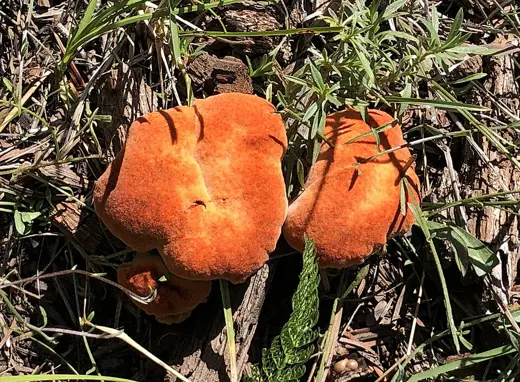

Main course · Popular in Quebec and British Columbia
Lobster mushroom bisque
Lobster mushroom bisque is made with wild lobster mushroom, a favourite in Quebec and British Columbia.

How do you make lobster mushroom bisque?
Lobster mushrooms simmered with shallots and cream, then blended.
Wild ingredients
- Lobster mushroom (Hypomyces lactifluorum): in season July to September